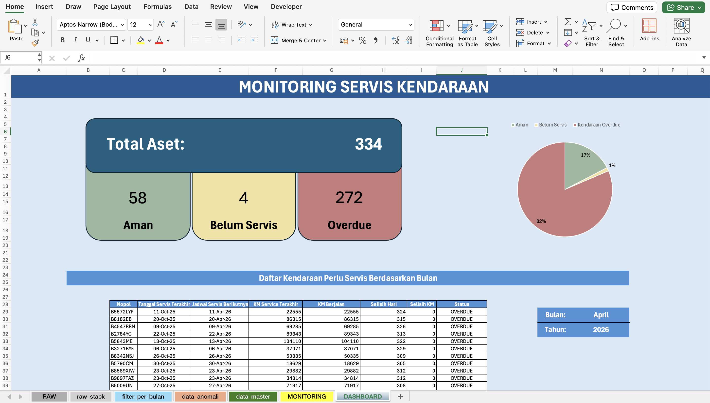
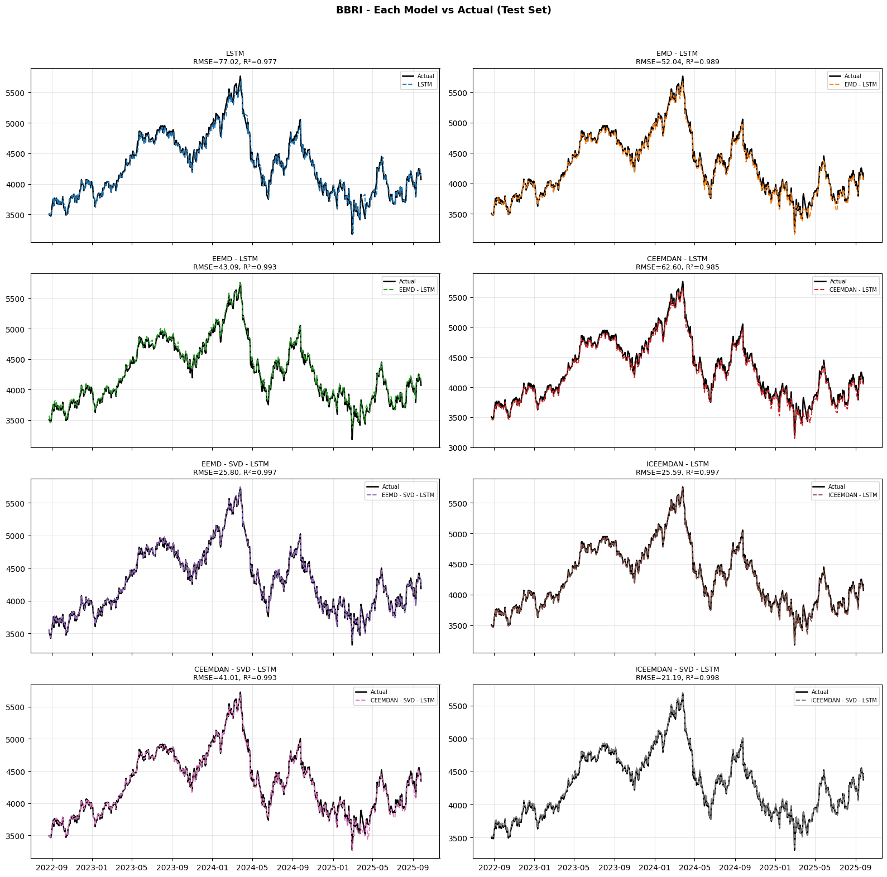
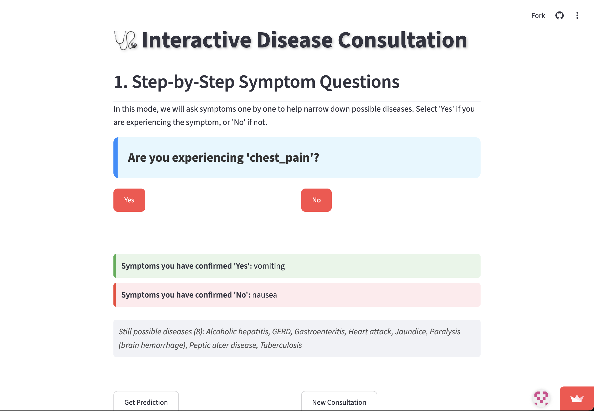
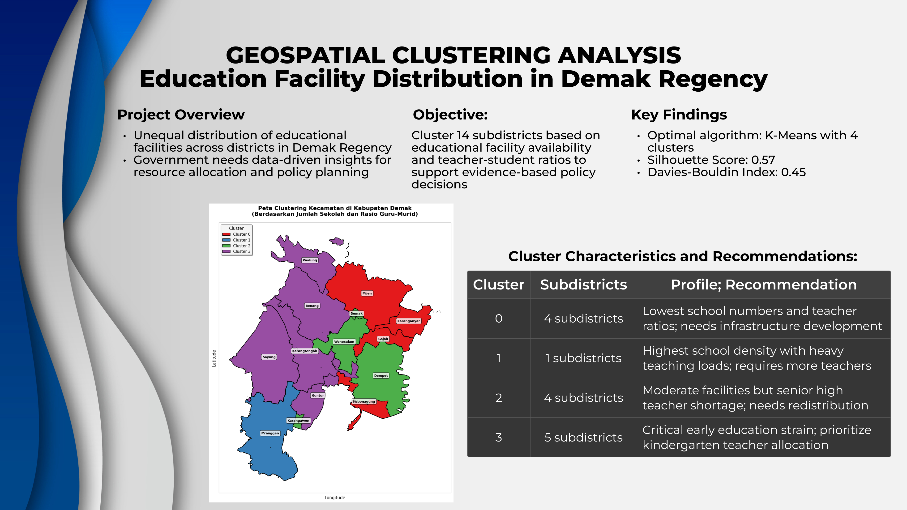

Building Efficient Workflows & Reliable Analysis.
I am a Statistics graduate (Cum Laude, GPA 3.57/4.00) with hands-on experience across the entire analytics pipeline. From conducting physical stock-takes of 10,000+ assets and cleaning raw logs, to building predictive models and streamlining Excel reporting workflows that cut processing time by over 99%.
I focus on turning messy logs into reliable insights that actually help teams move faster.
PROFESSIONAL EXPERIENCE
Data Analyst Intern, Asset Management
PT Federal International Finance (FIFGROUP)
- Redesigned the vehicle-service data collection process by replacing manual review of receipt photos with a self-service driver input form, eliminating manual data entry and freeing the team to focus on analysis.
- Rebuilt the Excel reporting workflow with automated formulas, cutting processing time from 1–2 days to about 10 minutes and improving data consistency.
- Conducted physical and system-based stock-take (stock opname) across 10,000+ assets, verifying and reconciling records against the master inventory to identify discrepancies.
Data Processing Intern
BPS Kabupaten Demak
- Conducted geospatial clustering of 14 districts across 8 educational-facility variables using K-Means and K-Medoids, identifying 4 optimal clusters (Silhouette Score: 0.57).
- Built interactive and static geospatial visualizations using Python (GeoPandas, Folium, Matplotlib) to map education access disparities.
Teaching Assistant
Universitas Gadjah Mada
- Biostatistics & Epidemiology: Supervised practicum sessions and assisted with data analysis using R and SPSS.
- Time Series: Assisted students in time series analysis using R and Eviews.
TECHNICAL SKILLS
Programming & DB
SQL (MySQL), Python (pandas, NumPy, scikit-learn, PyTorch, CatBoost), R
Visualization & BI
Tableau, Power BI, Streamlit, Matplotlib
Productivity
Advanced Excel (Automated Workflows), Word, PowerPoint
ORGANIZATION
Pekan Statistika 2023
Project Lead (Mar - Sep 2023)
Fully responsible for committee work. Coordinated the full series of events from planning through execution.
Himasta FMIPA UGM
Expert Staff, Media & Info (Feb 2023 - Feb 2024)
Produced visual content and streamlined coordination to improve publishing efficiency.
ACADEMIC & INDEPENDENT PROJECTS

Vehicle Service Monitoring Dashboard
Operational analytics in Excel converting manual submissions into an automated status tracker for fleet logistics.
Result: Flagged vehicles as safe, overdue, or not yet serviced based on rules (180 days/10k km). Workflow time reduced from 1–2 days.
Download Sample Workbook →Chinook Digital Music Store Revenue Analysis
Analyzed digital music store revenue using SQL CTEs, window functions, and multi-table joins across transaction, customer, track, genre, and artist data.
Result: Identified genre as the strongest revenue driver, supporting product-mix-focused recommendations.
View SQL Repository →
Hybrid ICEEMDAN-SVD-LSTM Stock Forecasting
Developed an end-to-end pipeline (ICEEMDAN decomposition, SVD denoising, LSTM training) to forecast daily prices for three Indonesian stocks (BBRI, UNVR, UNTR).
Result: Benchmarked against a standalone LSTM and simpler baselines; the hybrid model reduced RMSE by 64-86% and kept MAPE under 1% across all three stocks. Published in Jurnal Statistika.
Read Publication →
Interactive Disease Prediction Application
Engineered a multi-class disease-prediction application using CatBoost to classify likely diagnoses from symptom-based inputs.
Result: Designed an adaptive consultation workflow in Streamlit, incorporating follow-up symptom selection based on information gain, cross-validation, and interpretable result outputs.
Milk Production & Cattle Population Forecasting
Projected cattle population and milk output to 2029 using CNN, LSTM, and Bidirectional LSTM models trained on 52 years of FAO data, evaluated with 5-fold cross-validation.
Result: A 1D CNN gave the lowest error (MSE 0.0039). The forecast suggests a sizeable gap between projected production and demand by 2029 (≈7.7M tons).
Download Project Document →
Clustering Districts by Education Access
Grouped 14 districts in Kabupaten Demak based on school counts and teacher-student ratios using PCA, K-Means, and K-Medoids.
Result: Identified unequal distribution, highlighting areas with severe teacher shortages. (BPS Internship Project).